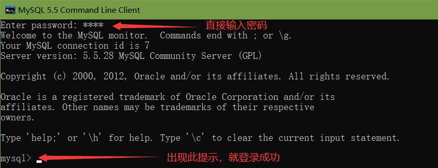
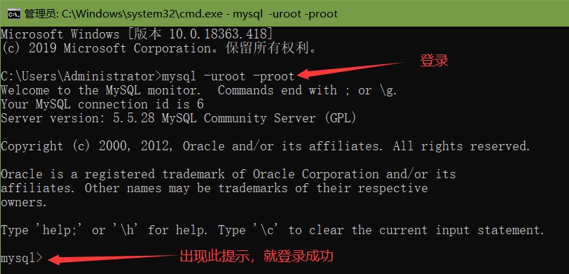

MYSQL 命令行大全 (简洁、明了、全面)
一、登录与退出（首先要保证mysql服务已经启动，才可以进行以下操作！）
1、使用MySQL Command Line Client（MySQL的DOS界面）登录mysql
出现Enter password:直接输入安装时的密码即可
此时的提示符是：mysql>

2、在DOS命令窗口登录mysql输入:mysql -hlocalhost -uroot -p回车进入mysql数据库
-h 表示服务器名(IP地址)，localhost表示本地，如果是本机也可以省略localhost
-u 为数据库用户名，root是mysql默认用户名
-p 为密码，如果设置了密码，可直接在-p后链接输入，如：-p123456
如果用户没有设置密码，显示Enter password时，直接回车即可
注意，如果你的mysql没有安装在C盘下，你需要先使用DOS命令进入mysql的安装目录下的bin目录中
如：安装在了e盘，输入 e: 进入e盘，在输入cd e:\Tools\MySQL5.5.25\bin
进入到mysql的bin目录下才可以输入 mysql -hlocalhost -uroot -p
此时的提示符是：mysql>

3、输入：quit或exit ——退出MySQL
二、库操作（登录mysql后输入命令，后面的分号一定不能丢了，代表命令结束！）
1、显示所有的数据库
命令：show databases; (注意：最后有个s)
mysql>show databases;
2、创建数据库
命令：create database 数据库名;
例如：建立一个名为xhkdb的数据库
mysql>create database xhkdb;
3、删除数据库
命令：drop database 数据库名;
例如：删除名为 xhkdb的数据库
mysql>drop database xhkdb;
4、选择数据库
命令：use 数据库名;
例如：如果xhkdb数据库存在，选择它：
mysql>use xhkdb;
屏幕提示：Database changed
5、查看当前使用的数据库
mysql>select database();
6、当前数据库包含的表信息：
mysql>show tables;（注意：最后有个s）
三、表操作，操作之前应选择(use 数据库名;)某个数据库
1、建表
命令：create table 表名(字段名 类型 非空 主键 自增,字段名 类型 非空,n..); ----多个字段名用逗号隔开
mysql>create table MyClass(
> id int(4) not null primary key auto_increment, ----表示字段名为id,类型为int长度为4,非空,主键自增长
> name char(20) not null, ----表示字段名为name,类型为char长度为20,非空
> sex int(4) not null default '1', ----表示字段名为sex,类型为int长度为4,非空,默认值为1
> degree double(16,2) ---表示字段名为degree,类型为double
> );
2、获取表结构
命令：desc 表名;或者show columns from 表名;
mysql>describe MyClass
mysql>desc MyClass;
mysql>show columns from MyClass;
3、删除表
命令：drop table 表名;
例如：删除表名为 MyClass 的表
mysql>drop table MyClass;
4、插入数据
命令：insert into 表名(字段名1,字段名2,字段名n) values (值1,值2,值n),(值1,值2,值n),(n...);
例如：往表MyClass中插入三条信息，只选择了(姓名，成绩)两个字段：name为Tom的成绩为45, name为Joan 的成绩为99，name为Wang的成绩为77
mysql> insert into MyClass(name,degree)values('Tom',45),('Joan',99),('Wang',77);
5、查询表中的数据
1)、查询所有行(*表示所有)
命令：select * from 表名;
例如：查看表 MyClass 中所有数据
mysql> select * from MyClass;
2）、查询前几行数据
例如：查看表 MyClass 中前两行数据
mysql> select * from MyClass order by id limit 0,2;
或者：
mysql> select * from MyClass limit 0,2;
6、删除表
命令：delete from 表名 where 表达式;
例如：删除表 MyClass中编号为1的记录
mysql> delete from MyClass where id=1;
7、修改表中数据：update 表名 set 字段=新值,…where 条件
mysql> update MyClass set name=’Mary’where id=2;
8、在表中增加字段：
命令：alter table 表名 add字段 类型 其他;
例如：在表MyClass中添加了一个字段passtest，类型为int(4)，默认值为
mysql> alter table MyClass add passtest int(4) default ’′
9、更改表名：
命令：rename table 原表名 to 新表名;
例如：表MyClass名字更改为YouClass
mysql> rename table MyClass to YouClass;
更改字段名
mysql> update 表名 set 字段名 = 新内容;
mysql> update 表名 set 字段名 = replace(字段名,'旧内容','新内容');
四、导出，导入
一、导出数据库用mysqldump命令（注意mysql的安装路径，即此命令的路径）:
/usr/local/mysql/bin/ ---> mysql的data目录
1、导出数据和表结构：
mysqldump -u用户名 -p密码 数据库名 > 数据库名.sql;
/usr/local/mysql/bin/mysqldump -uroot -p abc > abc.sql;
敲回车后会提示输入密码
2、只导出表结构
mysqldump -u用户名 -p密码 -d 数据库名 > 数据库名.sql;
/usr/local/mysql/bin/mysqldump -uroot -p -d abc > abc.sql;
3.导出指定表的数据
mysqldump -t 数据库名 -u用户名 -p密码 --tables 表1 表2 >/home/;
4.导出指定表的结构
mysqldump -d 数据库名 -u用户名 -p密码 --tables 表1 表2 >/home/;
5.导出表的数据及结构
mysqldump 数据库 -u用户名 -p密码 --tables 表1 表2 >/home/;
6.若数据中，某些表除外，其余表都需导出
mysqldump -h IP -u 用户名 -p密码 --default-character-set=utf8 数据库名 --ignore-table=库名.表名1;
--ignore-table=库名.表名2 >/home/;
二、导入数据库
1、首先建空数据库
mysql>create database abc;
2、导入数据库
方法一：
（1）选择数据库
mysql>use abc;
（2）设置数据库编码
mysql>set names utf8;
（3）导入数据（注意sql文件的路径）
mysql>source /home/abc/abc.sql;
方法二：
mysql -u用户名 -p密码 数据库名 < 数据库名.sql;>
mysql>mysql -uabc_f -p abc < abc.sql;